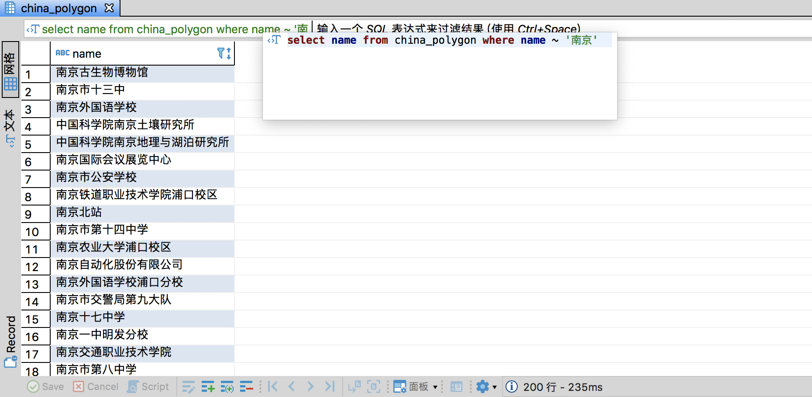
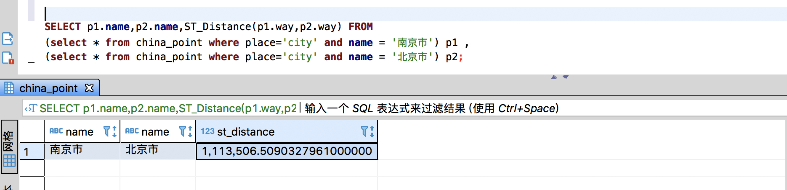

# 开始导入数据到china数据库 osm2pgsql -c -d china --slim --hstore -C 2000 -p china -r pbf /home/parallels/Downloads/CN
#5. 测试
至此，我们已经基于 osm 的数据有了一个地理信息库，我们可以通过以下 sql 做一些简单的测试
SELECTnameFROM china_polygon WHEREname ~ '南京';
结果：

SELECT p1.name,p2.name,ST_Distance(p1.way,p2.way) FROM (SELECT * FROM china_point WHERE place='city'ANDname = '南京市') p1 , (SELECT * FROM china_point WHERE place='city'ANDname = '北京市') p2
结果：

SELECTname, ST_AsText(ST_Transform(way,4326)) FROM china_point WHERE place='city';